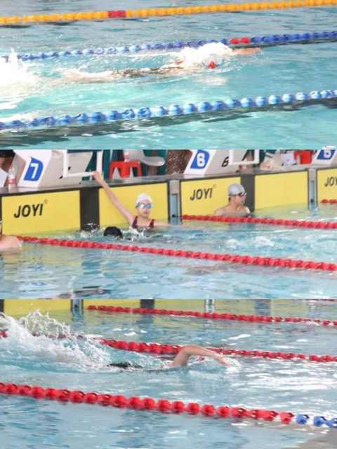
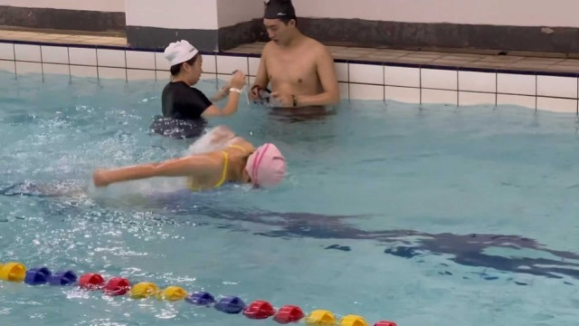

_ _
_____ _(_)_ __ ___ _ __ ___ (_)_ __ __ _
/ __\ \ /\ / / | '_ ` _ \| '_ ` _ \| | '_ \ / _` |
\__ \\ V V /| | | | | | | | | | | | | | | | (_| |
|___/ \_/\_/ |_|_| |_| |_|_| |_| |_|_|_| |_|\__, |
|___/
__
.-;'` `'-.
/ \ `\_..
|-"``;-. || `\
\ '.`-. /| /
`-. '. \ |-'`
`-. ) \ |
/` / / |
/ /` | |
/ ( ) /
_( `-,-'_/
/ `""""";`
`---..---'
//\\
//---0
_//_____
jgs `\
(~^~_-~^-~^_~^~^-~^_~-^~_^~-^-~^~^_~^~-^~^~^~-^~_
Swimming is the only sports that I have never been injured in.
I am good at it especially in freestyle and butterfly strokes.
Above was a photo of me in high school swimming competition, but swimming didn't count my regular sports at that time.
It was in this summer that I realized swimming is my sports, and restored great passion for it.